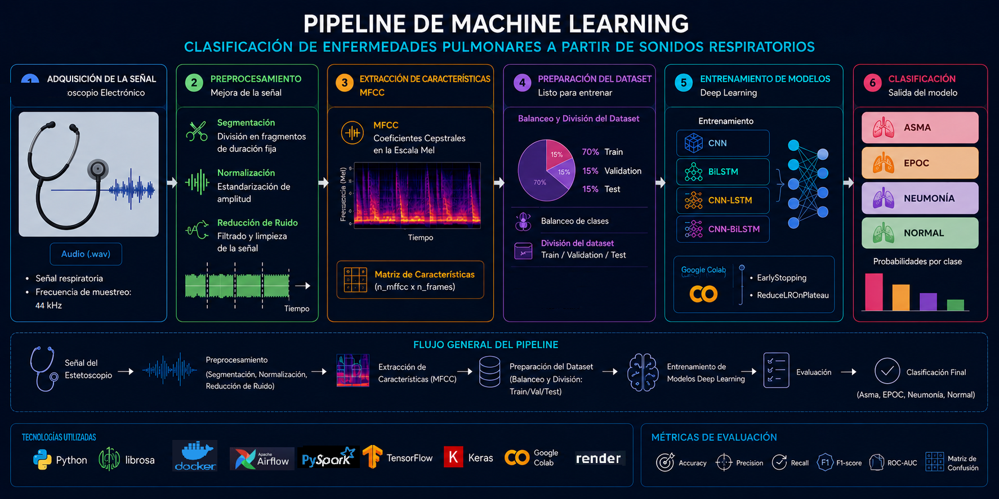
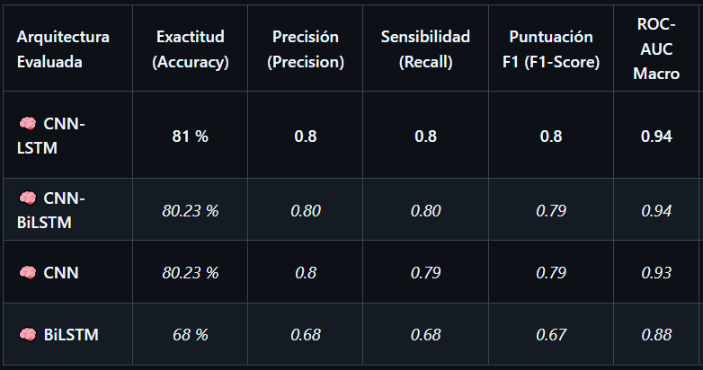
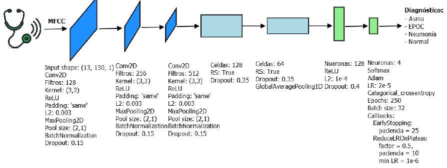
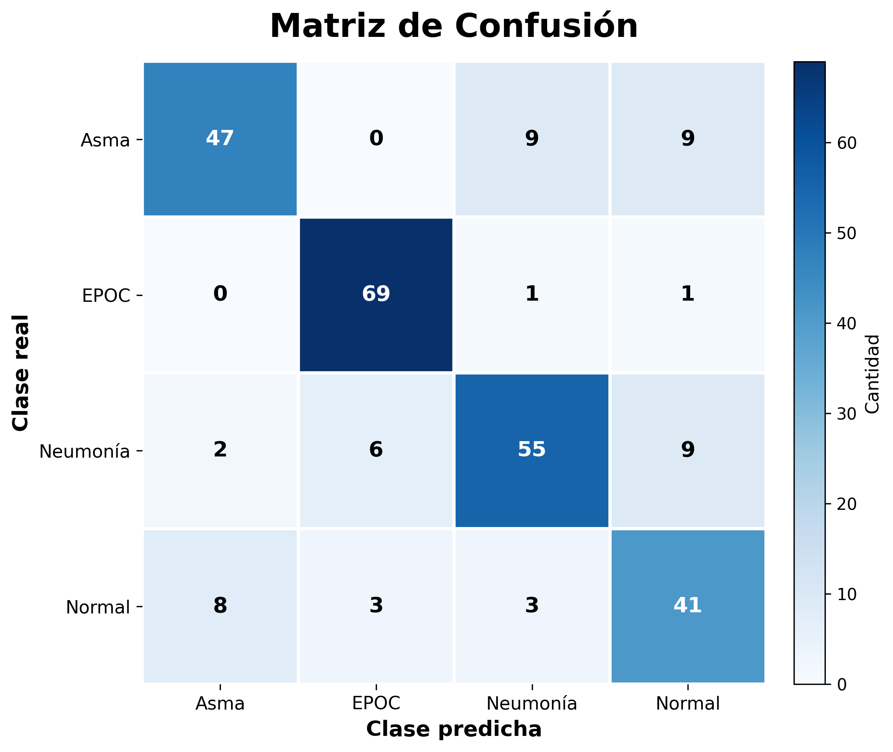
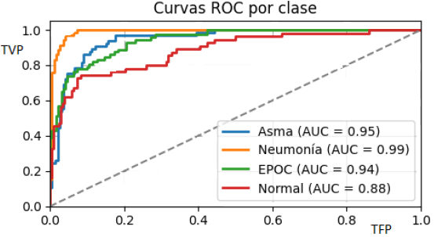

Sistema End-to-End para Detección de Enfermedades Pulmonares mediante Deep Learning
- Tareas:
- • Implementé un pipeline de procesamiento para sonidos respiratorios que incluyó adquisición de datos, control de calidad, segmentación, normalización, extracción de características MFCC y preparación del conjunto de entrenamiento.
- • Extraje características acústicas con coeficientes cepstrales en la escala Mel (MFCC) para representar patrones bioacústicos relevantes.
- • Diseñé, entrené y evalué cuatro arquitecturas de Deep Learning (CNN, BiLSTM, CNN-LSTM y CNN-BiLSTM), alcanzando una exactitud superior al 81% y seleccionando CNN-LSTM como modelo final para producción.

Tecnologías: Python • PySpark • TensorFlow • Keras • Librosa • Airflow • FastAPI • Docker • Render • Git • GitHub

1. Comparación de Desempeño de los Modelos

2. Arquitectura del Modelo Seleccionado (CNN-LSTM)

3. Matriz de Confusión del modelo CNN-LSTM

4. Curvas ROC-AUC del modelo CNN-LSTM

5. API REST desplegada (Swagger UI)

6. Inferencia en Producción mediante FastAPI